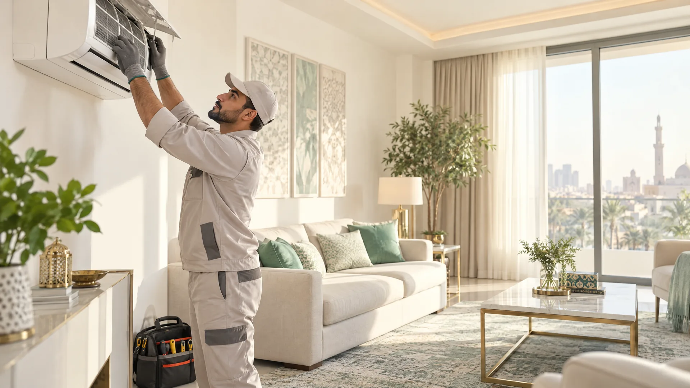

عزل الأسطح: ما الذي يجدر معرفته؟
تحديد سبب المشكلة يسبق اختيار مادة العزل. قد يرتبط البلل بتصريف مياه المطر أو فواصل متضررة أو مواسير قريبة، بينما ترتبط الحرارة بعوامل أخرى. لذلك يفيد توثيق مكان الأثر ووقت ظهوره، مع تجنب الصعود إلى سطح غير مؤمّن أو تغطيته مؤقتًا بمواد غير مناسبة.
هذا دليل توعوي عام، ولا يعني أن الخدمة متاحة في كل مدينة. راجع صفحة الخدمة وتحقق من نطاق التغطية والتكلفة قبل الحجز.
افحص العلامات من مكان آمن
لاحظ البقع على السقف الداخلي، وتقشر الطلاء، ومتى تظهر الرطوبة بعد المطر أو استخدام المياه. صوّر العلامات من الداخل، واذكر إن كانت تتسع أو تتكرر. لا تدخل إلى سطح رطب أو حافة مكشوفة للفحص بنفسك.
تسرب المياه يحتاج إلى تحديد المصدر أولًا؛ تطبيق طبقة عزل جديدة فوق سبب نشط قد لا يعالج المشكلة.
اطلب نطاقًا واضحًا
اسأل عن حالة السطح والتنظيف والتحضير والإصلاحات السابقة للطبقة، ونوع المادة وملاءمتها للاستخدام، وعدد الطبقات ووقت الجفاف والضمان إن وُجد. اطلب بيانًا لما لا يشمله العمل مثل إصلاح المواسير أو الفواصل.
عند البحث عن أفضل شركة عزل أسطح، قارن نتيجة الفحص وطريقة التنفيذ والمتابعة، لا ادعاءات «عزل نهائي» من دون وصف فني.
تحقق بعد التنفيذ
اطلب توثيقًا لمواضع الإصلاح ومواعيد السماح بالمشي أو وضع الأجهزة، ثم راقب علامات الرطوبة بعد الظروف المناسبة. احتفظ ببيانات المادة والفاتورة وشروط الضمان.
تأكد من توفر الخدمة في موقعك ومن أهلية مقدمها قبل الاتفاق، ولا تعتبر الدليل العام تقييمًا هندسيًا للمبنى.
تختلف احتياجات المنازل ومخاطرها. لا تستبدل هذه الإرشادات تعليمات المنتج أو الجهاز أو تقييم المختص، واتبع قواعد السلامة المحلية.
أسئلة شائعة
هل تكفي طبقة عزل فوق كل تسرب؟
لا؛ يلزم تحديد مصدر الماء وحالة السطح والفواصل قبل اختيار أي معالجة.
هل أفحص السطح بنفسي؟
لا تصعد إلى سطح رطب أو مرتفع دون وسائل وصول وحماية مناسبة؛ وثّق العلامات من مكان آمن.
اتصل الآن للاستفسار عن الخدمة
تأكد من توفر الخدمة ونطاقها في مدينتك قبل تحديد الموعد.
ملاحظة عملية في السعودية
هذا الدليل لا يغني عن الفحص عند وجود خطر أو تلف مخفي؛ أوقف التجربة المنزلية وسجّل العلامات التي ظهرت قبل طلب المختص في السعودية.
ولطلب عزل أسطح بصورة أوضح، اذكر مساحة المكان ودرجة الاستعجال وما جُرّب سابقًا، ثم راجع بنود الخدمة قبل اعتماد الموعد.